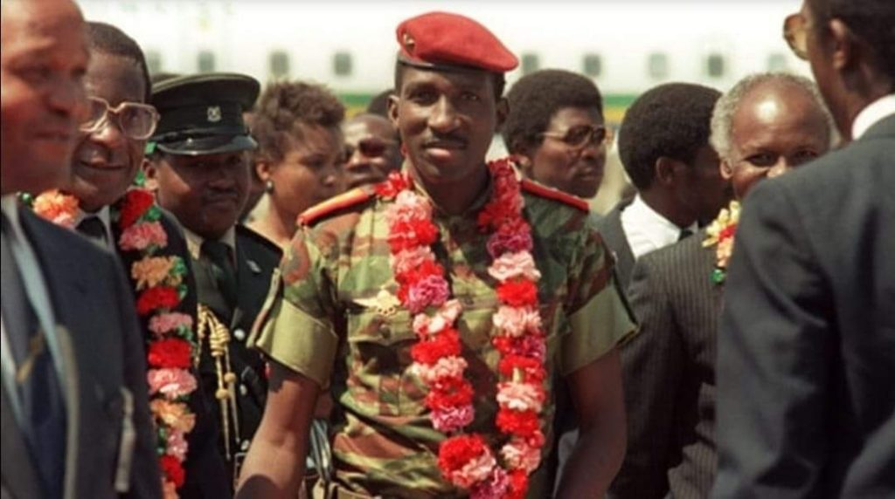

thomas sankara
Burkina Faso revolution's President

Thomas Sankara est un homme d'État anti-impérialiste, révolutionnaire, chef de l’État de la République de Haute-Volta rebaptisée Burkina Faso, de 1983 à 1987.
Quelques date important concernant Thomas Sankara :
- 21 décembre 1949 : Naissance de Thomas Sankara à Yako en Haute-Volta
- 4 août 1983 : Coup d'Etat militaire qui conduit Thomas Sankara au pouvoir en Haute-Volta
- 10 janvier 1983 : Thomas Sankara nommé prémier ministre
- 1987: Discours a Addis-Abeba contre la dette
- 15 octobre 1987 : Assassinant de Thomas Sankara à OUAGADOUGOU
Vous pouvez également en savoir bien plus sur le président Thomas Sankara en suivant se lien.